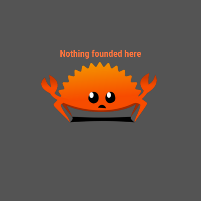

<!DOCTYPE html>
<html lang="en">
  <head>
    <meta charset="UTF-8" />
    <meta name="viewport" content="width=device-width, initial-scale=1.0" />
    <title>App de tareas</title>
    <script type="module" src="/src/main.js"></script>
  </head>
  <body></body>
</html>

<span>
  Nothing founded here
  
</span>
